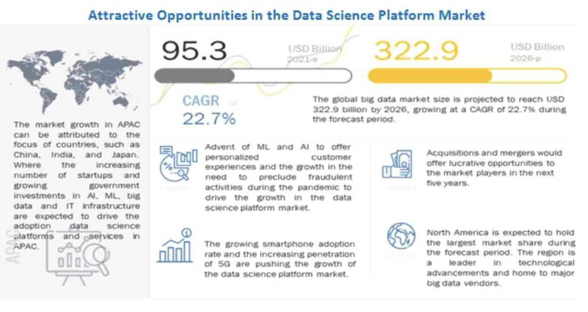

- What is Data Science?
- Why is it Important?
- History
- Data Science Life Cycle
- 1. Capture
- 2. Maintain
- 3. Process
- 4. Analyze
- 5. Communication
- Prerequisites for Data Science
- 1. Programming Languages
- 2. Machine Learning
- 3. Statistics, Probability, and Linear Algebra
- 4. Databases and SQL
- 5. Big Data Frameworks
- 6. Data Visualization
- Who is a Data Scientist?
- Roles and Responsibilities
- What do They Do?
- Data Science Applications in Daily Life
- 1. E-Commerce Price Comparison Websites
- 2. Internet Search
- 3. Digital Marketing
- 4. Image and Speech Recognition
- 5. Healthcare
- 6. Airline Route Planning
- 7. Logistics
- 8. Gaming
- 9. AR and VR
- 10. Banking
- 11. Recommendation Systems
- Job Roles in Data Science
- 1. Data Scientist
- 2. Data Analyst
- 3. Data Engineer
- Data Science vs Other Related Data Fields
- How does Data Science Differ from Business Intelligence?
- How does Data Science Differ From Data Analytics?
- How does Data Science Differ from Machine Learning?
- Conclusion
Over the past decade, there has been no sign of slowing down data generation. It is generated in quintillions daily but is unstructured, raw, and noisy. It needs to be converted into a meaningful and understandable form to make the most out of the data. This is where the role of data science comes into play.
Data science has taken the world by storm in the past decade. It has become an essential aspect of every company due to the consistent and extensive creation of data daily.
Today, companies have adopted data science techniques to uncover valuable insights from raw and noisy data to improve customer satisfaction and grow their business.
Do you know?
According to Markets and Markets , the global data science platform market was valued at $95.3 billion in 2021 and is expected to grow to $322.9 billion by 2026 at a CAGR of 27.7%.

Undoubtedly, data science is a growing field. With the forecast of its global market size, we can say that there will be great opportunities and demand for skilled data professionals in the near future.
If you plan to enter this field, you must first understand it. This article will help you gain insights into the data science domain, a flourishing and ever-expanding field.
What is Data Science?
It is a multi-disciplinary field that lies at the intersection of
- Artificial intelligence
- Computer engineering
- Mathematics and statistics
- Substantive expertise
Simply put, it is the field involving the study of data to uncover valuable insights. Businesses leverage these insights to make strategic planning and informed decisions.
The transformation of raw data into actionable insights takes place with the help of statistical analysis, data analysis , machine learning algorithms, data modeling, and many other techniques.
The field is not just the concept of unifying statistics, data analysis, and their related methods but also comprises their results. It intends to analyze and understand actual phenomena with the help of data and answer various questions, like
- What happened?
- Why did it happen?
- What will happen?
- What can be done with the results?
Further, it aims to reveal the features or the hidden structure of complex and natural human and social phenomena using a different point of view from the established or traditional theories and methods. These points of view imply multidimensional, dynamic, and flexible ways of thinking.
Why is it Important?
Data science combines various techniques, tools, and methods to derive value from raw and unstructured data.
With technological advancements, there has been a proliferation in the inception and use of devices that automatically collect user data. Social media platforms, online stores, payment apps, and many other online systems gather extensive amounts of data. As a result, organizations today are always flooded with loads of data.
Well, this data originally exists in a raw and unstructured form, which is tricky to understand and use. However, data science turns this data into knowledge businesses use to improve their processes and attain maximum customer satisfaction.
History
Today, deriving insights from vast data stores has been designated as a new profession. However, making sense of has been practiced for a long time by scientists, statisticians, computer scientists, librarians, and many other professionals.
Let us now discuss the evolution of the term “Data Science” below.
-
1962
John Tukey wrote “The Future of Data Analysis”. In this, he stated that data analysis and the part of statistics that adhere to it must inherit the characteristics of science rather than mathematics. Data analysis is fundamentally an empirical science.
-
1974
Peter Naur published the book “Concise Survey of Computer Methods” in Sweden and the United States. It covers contemporary data processing methods used in a wide range of applications. Further, Naur defined data science as –
“The science of dealing with data, once they have been established, while the relation of the data to what they represent is delegated to other fields and sciences.”
-
1977
The International Association for Statistical Computing (IASC) was established. Its primary motive was to associate traditional statistical methodology, modern computer technology, and the knowledge of domain experts to transform data into knowledge and information.
-
1989
Gregory Piatetsky-Shapiro organized the first data-related workshop, Knowledge Discovery in Databases (KDD). Later, it became the annual ACM SIGKDD Conference on Knowledge Discovery and Data Mining (KDD).
-
1994
BusinessWeek published a cover story on database marketing. The story highlighted how companies collect data to predict which customers will likely buy their products. Using this data, they craft personalized messages and send them to potential customers.
-
1996
International Federation of Classification Societies (IFCS) members gathered together in Kobe, Japan, for the biennial conference. The conference's title was “Data Science, classification, and related methods”. It was the first time the term ‘Data Science” was used.
Meanwhile, Usama Fayyad, Gregory Piatetsky-Shapiro, and Padhraic Smyth published “From Data Mining to Knowledge Discovery in Databases.” In this, they wrote that the concept of finding useful patterns and information in data is referred to by different names – data mining , knowledge extraction, information harvesting, information discovery, data archeology, and data pattern processing.
-
1997 to 2000
Professor C. F. Jeff Wu, in his inaugural lecture for H. C. Carver Chair in Statistics, said that statistics should be renamed by data science and statisticians by data scientists.
-
2001 to 2010
In 2001, William S. Cleveland published "Data Science: An Action Plan for Expanding the Technical Areas of the Field of Statistics." He said that the plan was to expand the technical areas of the field of statistics. Further, he stated that the field should be called data science due to substantial changes.
In 2002, the Data Science Journal focused on data and database management in science and technology. It provided descriptions of data systems, their applications, and legal issues.
The Journal of Data Science states that ‘data science’ means collecting, analyzing, modeling, etc., all sorts of applications.
Further, many more experts, journals, and publications presented their thoughts on data science.
-
Present
Currently, the data science domain combines a variety of tools, technologies, and fields, including statistics, machine learning, computer science, data mining, and data visualization. Also, it is implemented in various industry verticals, such as healthcare, finance, government agencies, IT, marketing, and transportation.
With a tremendous amount of data available today, the job of a data scientist is considered one of the sexiest ones.
Data Science Life Cycle
Every data science project comprises the following steps:
1. Capture
The first step involves acquiring data based on the question(s) you need to answer. The project begins with identifying various data sources like logs from web servers , social media data, online repositories or excel, etc.
Data acquisition involves acquiring data from all the identified internal and external sources that can help answer the business question(s). It is important to track where the data slice comes from and whether it is up-to-date. It is recommended to track this information during the entire lifecycle of a data science project, as data might need to be re-acquired to test other hypotheses.
2. Maintain
This step involves data wrangling . Now comes the role of data scientists. They clean data and transform it into a standard format. Through regular data cleaning, data scientists can easily identify the following:
- Foibles that exist in the data acquisition process,
- Assumptions they could make, and
- Models they could apply to produce results.
Further, they load the refined and transformed data into any one of the data science tools .
3. Process
This step defines a project’s core activity. It requires writing, running, and refining the programs to analyze and derive meaningful business insights from the data.
Such programs are often written in Python, Perl, R and MATLAB . Various machine learning techniques are applied to the data to identify the ML model that best fits the business requirements. All the models are trained using the training data sets.
4. Analyze
After we get the set of process-ready data, we need to analyze it. It involves analysis of the random subset of data. This is a brainstorming stage for data analysts as this is where the patterns in the data are observed, and useful insights are retrieved.
There could be a possibility that the dataset could be missing values or there is some unnecessary (dispensable) data. Such inconsistencies are identified and removed in this stage.
5. Communication
The goal of this stage is to deploy the models into production for the final user acceptance. The user must validate the models' performance; if any issues exist, they must fix them in this stage. A data science project is an iterative process. Steps are iteratively repeated as data is acquired continuously, and understanding becomes much easier.
Prerequisites for Data Science
To carry out the process of data science in organizations, here are a few technical concepts you must master:
1. Programming Languages
R and Python are useful for performing statistical analysis and computations. For this purpose, Python provides a myriad of libraries, such as NumPy, SciPy, Pandas, Matplotlib, Sci-kit Learn, etc.
Check out in detail: Python Data Science Libraries
On the other hand, R is a programming language and a software environment for statistical computing and graphics. The software environment is a suite of tools for data manipulation, calculation, and graphics display.
2. Machine Learning
It is all about equipping machines with training data sets and making them able to perform tasks requiring human-like intelligence without any human intervention.
Machine learning has significantly transformed how data is extracted, processed, and interpreted. It replaces traditional statistical techniques with modern, automated sets of generic methods.
For data scientists, understanding the basic concepts of machine learning and mastering machine learning algorithms is essential.
3. Statistics, Probability, and Linear Algebra
These concepts form the basis for various data science techniques and tools. Statistics is at the heart of ML algorithms that are useful for capturing and transforming data into actionable insights. It is used to collect, process, and draw conclusions from data.
Probability helps data scientists to evaluate the certainty of a particular study’s or experiment’s outcomes.
Data processing, data transformation, and model evaluation require linear algebra. In addition, it forms the basis for writing various ML algorithms, such as linear regressions, principal component analysis (PCA), etc.
4. Databases and SQL
As data is stored in databases, data scientists should have hands-on experience working with relational (SQL) and non-relational (NQL) databases . Relational databases store unstructured data, while non-relational databases store all kinds of data – structured, semi-structured, and unstructured.
SQL, or Structured Query Language, is a language to communicate with relational databases. It allows you to store, retrieve, manipulate, and delete data in SQL databases.
5. Big Data Frameworks
Big data is a term referred to enormous amounts of data. We have big data frameworks to make the processing of big data quick and easy. Apache Hadoop, Spark, Hive, Samza, Flink, and MapReduce are well-known options.
6. Data Visualization
It implies the visual representation of data. The insights or knowledge extracted from extensive data sets are represented in different forms, such as charts, graphs, plots, maps, etc. These data visualizations make it easy for laymen to grasp the insights.
Data scientists should be proficient in popular data visualization tools , such as Tableau, Power BI, etc.
Who is a Data Scientist?
A data scientist is a professional in charge of deriving valuable insights from vast volumes of data and helping businesses make informed decisions. They identify business problems and provide solutions using big data.
These professionals have a broad skill set, a combination of mathematics, statistics, computer science, machine learning, and many other technologies. Using these skills, they analyze big data and discover trends and patterns useful for organizations.
Roles and Responsibilities
Here are the common roles and responsibilities of a data scientist:
- Find patterns and trends from data to discover insights.
- Communicate insights and recommendations to the team and other staff.
- Create algorithms and data models to predict outcomes.
- Leverage machine learning techniques to help businesses improve the quality of their offerings.
- Stay atop the latest data science trends and technologies.
What do They Do?
Let us now discuss a step-by-step approach to how data scientists discover insights from unstructured and noisy data and help businesses.
- Identify the business problem and understand it thoroughly.
- Determine the appropriate data sets required to solve the problem.
- Gather structured and unstructured data from diverse relevant data sources – whether external or internal.
- Standardize the raw data, i.e., transform it into a format required for data analysis. It involves cleaning data, such as eliminating redundant data, adding missing values, and removing inconsistencies.
- Feed data to the analytics system to analyze and uncover patterns and trends.
- Understand and interpret the patterns and trends to find solutions and opportunities for the business problem.
- Communicate the results or insights with stakeholders and the team.
Check out: How to Become a Data Scientist?
Data Science Applications in Daily Life
Data science or data-driven science enables better decisions, predictive analysis , and pattern discovery. It associates various areas of work in statistics and calculation to translate data with an end goal of decision-making.
1. E-Commerce Price Comparison Websites
These websites are fueled with data fetched using APIs and RSS feeds. Such websites offer a single platform to check the prices of different objects or things across many online shopping websites. This allows users to select a product by comparing prices, features, etc., from numerous sellers in a single place. PriceRunner, Junglee, and Shopzilla are a few examples of such sites.
2. Internet Search
All search engines, including Google, Bing, Baidu, Yahoo, and DuckDuckGo , use data science algorithms to provide accurate outcomes for a search query in just a few seconds.
3. Digital Marketing
It is a critical domain where data science applications go unnoticed. Data science algorithms help marketers collect and segment customer data based on buying behavior, interests, and demographics.
With customer data at their fingertips, marketers can send personalized messages to them, increasing the chances of conversion. Also, they can significantly improve their marketing campaigns and return on investment (ROI).
Furthermore, sentiment analysis helps marketers understand customers' perceptions through social media posts, reviews, and other online content. Using this, they can tailor their products and services.
4. Image and Speech Recognition
Image and speech recognition are another two areas extensively using data science. For example, when we upload a photo on Facebook, we get tag suggestions, which is possible due to the image recognition feature that Facebook offers.
We also use speech recognition in our daily lives using smartphones featuring intelligent assistants like Siri and Google. Following the trend, the world has also witnessed the inception of voice-supported speakers and TVs.
5. Healthcare
This industry has greatly benefitted from data science. It has helped healthcare professionals develop amazing tools and systems to diagnose diseases quickly, improve patient care, and cure diseases.
6. Airline Route Planning
With data science, an airline can optimize its operations in many ways and thus offer a hassle-free experience to its customers. Presently, it can:
- Plan the routes, thus predicting if connecting flights will be needed or direct flights could be scheduled.
- Predict if any delays are possible.
- Offers promotional offers by observing the booking patterns of customers.
- Decide which class of planes to purchase depending on the demand.
7. Logistics
Companies like DHL, FedEx, and UPS use data science algorithms to enhance their operational efficiency. With optimized algorithms, these companies have discovered the best possible ways to ship, the most appropriate delivery time, and the best method of transport to pick, leading to cost-effectiveness and so on.
8. Gaming
Gaming went to the next level with data science. Video games developed these days using machine learning are designed in such a way that they upgrade themselves. EA Sports, Sony, and Zynga are among the few giants who have taken the gaming experience to a new level with data science.
9. AR and VR
Augmented reality (AR) and virtual reality (VR) use data science to provide amazing user experiences. AR and VR greatly rely on image and video processing to provide realistic and immersive experiences. It is possible with the help of data science.
In addition, with the help of predictive analytics and data analytics , AR and VR applications can understand user behavior and provide personalized experiences.
10. Banking
Data science plays a vital role in the banking industry by helping them detect fraud and potential risks. Fraud detection systems use data science and machine learning algorithms to detect and prevent fraud in real time.
Some other applications include customer lifetime value prediction, churn rate prediction, customer sentiment analysis, personalized marketing, virtual assistants, chatbots, and customer segmentation.
11. Recommendation Systems
If you use streaming platforms like Netflix and Amazon, you are using recommendation systems. Netflix’s recommendation engine provides viewers with movies and shows based on their preferences and choices.
Conversely, Amazon uses a recommendation engine to recommend products to customers based on their browsing and purchase history.
Do you know? – More than 35% of purchases on Amazon come from its recommendation engine.
These few popular industry verticals have greatly benefited from data science. The field has also transformed many other industry verticals and will continue to find new opportunities to help businesses improve their operations.
Job Roles in Data Science
1. Data Scientist
Data scientists examine the questions needing answers and find related data. They have good business acumen and analytical skills, as well as the ability to mine, clean, and present data.
Skills Required:
- Programming Skills (SAS, R, Python)
- Statistical and mathematical skills
- Storytelling
- Problem-solving
- Data visualization
- Hadoop and SQL
- Machine learning
2. Data Analyst
Data analysts bridge the gap between data scientists and business analysts. They are provided with the questions that need answering from an organization and so they organize and analyze data to find results that align with high-level business strategies. They are responsible for translating technical analysis to qualitative action items and effectively communicating their findings to diverse stakeholders.
Skills Required:
- Programming Skills (SAS, R, Python)
- Data wrangling
- Data visualization
- Statistical and mathematical skills
3. Data Engineer
Data engineers manage exponential amounts of rapidly changing data. They focus on the development, deployment, management, and optimization of data pipelines and infrastructure to transform and transfer data to data scientists for querying.
Skills Required:
- Programming languages (Java or Scala)
- NoSQL databases (MongoDB)
- Frameworks (Apache Hadoop)
Check out: How to Become a Data Engineer?
Data Science vs Other Related Data Fields
Data Science is a broad, umbrella term for all other data-related fields. Let us highlight some differences between them.
How does Data Science Differ from Business Intelligence?
Business intelligence (BI) also comprises the use of strategies and technologies to analyze business data or information. It can also provide historical, current, and predictive views of business insights. But still, there are some key differences.
Unlike data science, which uses structured and unstructured data, business intelligence uses only structured data. Also, BI is analytical in nature. This means that it provides historical reports of data.
In contrast, data science is scientific in nature as it performs in-depth statistical analysis on the datasets. Further, it leverages more sophisticated statistical and predictive analysis and machine learning, whereas business intelligence uses basic statistics emphasizing visualization.
Lastly, business intelligence compares historical data and current data to identify trends. Contrary to this, data science combines historical and current data to predict future performance, possibilities, and outcomes.
|
Business Intelligence |
Data Science |
|
Uses only structured data. |
Uses structured and unstructured data. |
|
Provides historical reports of data (Analytical in nature). |
Provides in-depth insights into data by performing statistical analysis (Scientific in nature). |
|
Compares historical and current data to identify trends. |
Compares historical and current data to predict future outcomes. |
|
Leverages statistics and visualization. |
Leverages statistical and predictive analytics and machine learning. |
How does Data Science Differ From Data Analytics?
We use both these terms interchangeably for collecting, processing, analyzing, and deriving insights from large data sets. The primary difference is that data science is an umbrella term, while data analytics is associated with statistics, mathematics, and statistical analysis.
Data analytics primarily focuses on data analysis, while data science associates with a broader picture of the organizational data. It is a technique to examine data sets and generate insights by connecting and observing patterns in trends to achieve organizational targets.
Unlike data science, it involves dealing with historical data in context and less in AI, machine learning, and predictive modeling.
In companies, data scientists and data analysts work together. Data analysts focus on routine analysis and provide regular reports. In addition to this, data scientists create new data models, write algorithms, and generate new tools and methods for data analysts.
The following table presents the various differences between the two closely related fields:
|
Data Science |
Data Analytics |
|
|
Goal |
Asking business questions and planning strategy. |
Analyzing and mining business data. |
|
Size of data |
Big set of data (big data). |
A limited set of data. |
|
Involves |
Data preparation, cleansing, and analysis to gain insights. |
Data querying and aggregation to find trends. |
|
Focus on |
Pre-processed data. |
Processed data. |
|
Purpose |
Finding insights from raw data. |
Finding insights from processed data. |
|
Data Types |
Structured and unstructured. |
Structured. |
|
Source |
Data scientist explores and examines data from multiple disconnected sources. |
Data analysts usually look at the data from a single source. |
|
AI and ML |
More involvement. |
Less involvement. |
|
Predictive Analysis |
Yields more predictable insights. |
Yields less predictable insights. |
Check out: Data Science vs Data Analytics
How does Data Science Differ from Machine Learning?
Machine learning is a computer science discipline that trains machines to understand and analyze data independently and provide accurate predictions. It enables machines to mimic human intelligence. It is one of the methods used in data science to drive valuable insights from data.
Data scientists generally combine machine learning with mathematics, statistics, and other fields to process data.
To know the differences in detail, check out: Data Science vs Machine Learning
Feedback
- Send your Feedback to nigammishra826@gmail.com